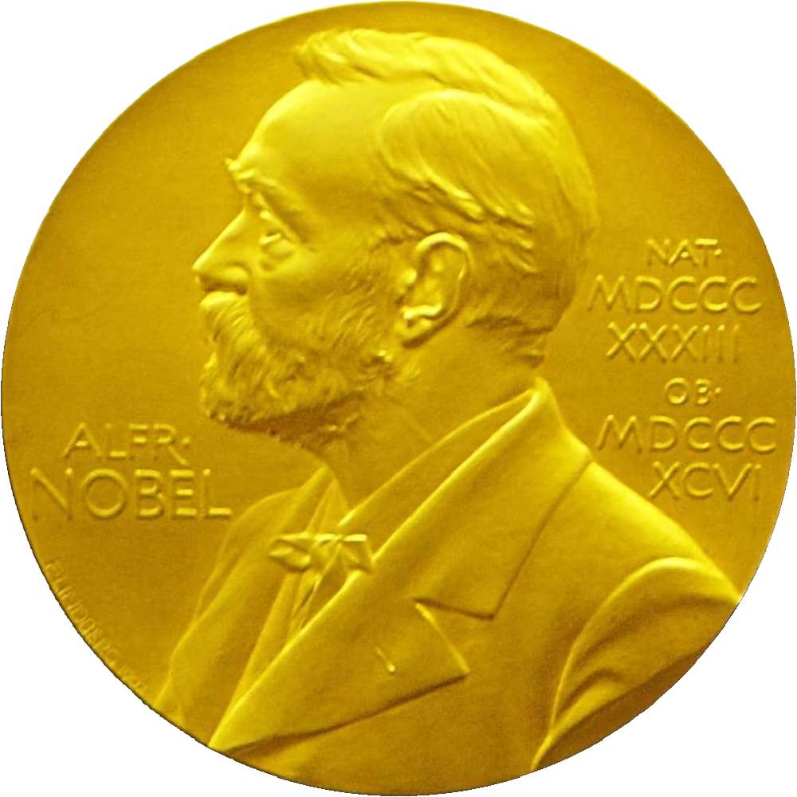

DE LITTERÄRA NOBELPRISEN 
1990 fick jag en bok av min mor, det var Till klarhet av Octavio Paz.
Jag fick veta att han var nobelpristagare i litteratur det året och av oklar anledning blev jag intresserad av fler författare som fått nobelpriset i litteratur.
Vid denna analoga tid i mitt liv skaffade jag en pärm med A-Ö-register och satte in information om respektive författare.
För att göra en drygt 30-årig historia lite kortare så har jag nu landat i den här hemsidan där jag lagt in varje pristagare med deras motiveringar. Det finns också en sida över de pristagare jag läst och vilka böcker.
Det skulle glädja mig om ni själva vill lägga in era tips på nobelpristagare ni läst och en bok personen skrivit. Gärna med några ord över vad ni tyckte om.
Jag har en ambition att läsa alla nobelpristagare, och efter 30 år med den ambitionen har jag kommit knappt halvvägs.
Mer om litteraturpriset
Svenska
Akademin
Wikipedia